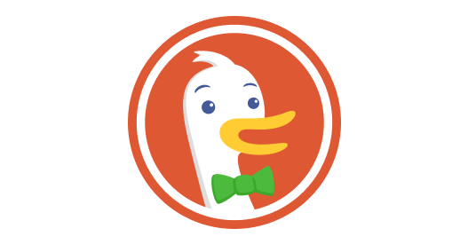

Internal testing tool
Elinext built QA tooling that cut manual effort and made test work easier to track.
Read the case
DuckDuckGo x ElinextA short Elinext proposal for Jaryd M., focused on backend capacity, product quality, and private AI work across DuckDuckGo, Duck.ai, and the browser.
Saw DuckDuckGo is hiring an Engineering Director, Backend. That search takes time, while core product work still needs senior hands.
The backend director search says DuckDuckGo is scaling core product leadership, not just filling a seat. The hard part is keeping search, private ads, Duck.ai, and subscription work aligned while the role is open. Each area has privacy rules and release risk. If decisions wait too long, small backend tasks can turn into blocked roadmap items.
Map search, ads, Duck.ai, and subscription backend queues, then pick work that can move without deep internal context.
Add senior engineers to unblock agreed backend services, with code reviews inside DuckDuckGo rules and privacy checks.
Build regression suites around release-risk flows, including search, sign-in-free Duck.ai, subscription, and browser protection changes.
Leave docs, tests, and backlog notes so the permanent backend director can take control cleanly.
Elinext is a full-cycle software development company, active since 1997, with about 700 in-house specialists and no freelancers. We work across backend, web, mobile, AI/ML, DevOps, QA, and product design. For a privacy company, ISO 27001 and ISO 9001 matter because outside help must respect security and quality rules. Our client list includes Broadcom, Siemens, Volkswagen, TRUMPF, and TUI. That mix fits the squad above: senior engineers who can join your process, ship small, and leave clean evidence.
Elinext built QA tooling that cut manual effort and made test work easier to track.
Read the case
A Java and Spring team built alerts so infrastructure issues could be handled faster.
Read the case